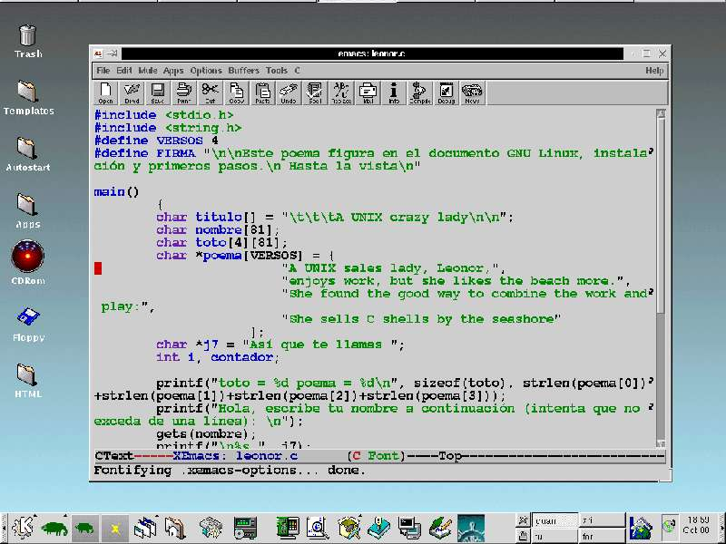

|
|
|
|
|
1.-Introducción a C (por el dr7tbien)
1.1.- Introducción (por el dr7tbien)
1.2.- Compilación ¡No entiendo nada! Editores de texto (por el dr7tbien)
1.3.- El flujo o hilo de un programa (por el dr7tbien)
1.4.- Un programa en C (por el dr7tbien)
1.5.-
Compilación y sintaxis de programas
(por el dr7tbien)
 1.2.-
Compilación y editores de texto
1.2.-
Compilación y editores de texto

Para desarrollar un programa en C necesitaremos un editor de textos, pero atención , ni se os ocurra usar MicrosoftWord, WordPerfect o StarOffice para estos menesteres!. Para desarrollar un programa en C, nos hace falta el aparentemente "peor" editor de textos que traiga nuestro sistema operativo: Bloc de Notas en Windows9x, vim, vi, xemacs, joe, etc en Linux o UNIX.
Bloc de Notas(Windows98): Sinceramente no conozco más editores de textos para Windows 98 en los que se pueda desarrollar un programa, por lo que si usais para estos menesteres Windows9x, irremediablemente os lo recomiendo. Hay que pagar por el sistema Windows9x.
vi: Procesador de textos para linux-UNIX, realmente hostil de usar, feo, se usa sobre consola. Para masokas y sufridores. La ventaja de saber usar este editor, es que todos los sistemas linux-UNIX lo tienen. Ventajas: Avisa cuando se cierran prentesis y llaves, te dicen si son correctos. En C hay muchos parentesis, llaves y puntos y comas. Gratis
vim Procesador de textos para linux-UNIX, menos hostil de usar que vi, menos feo, se usa sobre consola. Casi todos los sistemas Linux-Unix lo tienen, idénticos comandos que vi además de otros añadidos. Ventajas: Al igual que vi, avisa si es correcto el cierre de llaves o paréntesis. muestra en colores las funciones, tags y palabras clave, con lo cuál nos avisará de muchos errores. Si lo teneis en vuestro sistema, consultar /etc/vimrc para reconfigurarlo, en el caso de que no os salga en colores. Es facil, si mal no recuerdo, sólo hay que descomentar un par de lineas, además explica en el mismo archivo cómo hacerlo. Gratis.
xemacs Procesador de textospara Linux - UNIX, apenas hostil. No todos los sistemas Linux lo tienen, aunque a estas alturas el sistema que no lo tenga......De los procesadores de texto mencionados, este es el más amigable para estos menesteres. Necesita de un par de horas de adaptación para ponerte al día con su uso y ya!, tendrás lo mejor en editores de texto para programación en C. Todo en colores, los tags, todo. Reconoce lenguajes como C++, java, perl, html. Imposible equivocarse. Parece ser que hay versión para windows9x. Recomendado. Es gratis.

Una vez desarrollado nuestro programa en cualquier editor de textos, deberemos de traducir nuestro programa en texto a lenguaje máquina. Para ello necesitaremos de un programa compilador: gcc, cc, Borland C, MicrosoftC...gcc es compilador de C que viene de "serie" en los sistemas Linux o UNIX. Es gratis. Borland C y VisualC++ son compiladores de C desarrollados para Windows noventa y tantos y cuestan dinero. Borland C y MicrosoftC son entornos integrados que disponen de editor de textos, un compilador, y un depurador (detector de errores), un desarrollador de proyectos, etc. Tienen la gran ventaja de la excelente ayuda de la que disponen.
Si hasta el momento has usado tu computador para navegar en Internet y escribir el proyecto de fin de carrera, a partir de ahora tu máquina se va a enterar de lo que es bueno, se va a poner a desarrollar programas y aunque te parezca que no está acostumbrada, en seguida cogerá el hábito. El que escribe este manual ha usado el compilador Borland C con múltiples problemas, dejándome inútil el equipo en caso de errores de bucles infinitos y teniendo que resetear cada poco tiempo, con los consiguientes trastornos (reseteado, scandisk, rearranque del compilador, etc.....). Ignoro si esto es debido a la plataforma en la que he ejecutado los programas o al compilador en sí. Hablando con amigos de verdad me recomendaron que instalara un sistema Linux en mi computador para evitar estos problemas y esto funcionó. Parece ser que Linux no accede tan directamente al hardware del sistema como hace Windows9x y esto revierte en la casi perfección en momentos de ejecución de un programa mal diseñado.
Si dispones de sistema Windows 9x y deseas un compilador gcc, buscalo en internet o en alguna revistilla, existe un compilador gcc para Windows 9x. Léete el manual de instalación y te lo instalas. Cuándo compilemos nuestro programa, ya lo podríamos ejecutar. Más adelante explicaremos cómo hacer funcionar todo esto de los compiladores.
|
|
|
|||